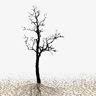

Пробуждение
Irremann
Играть онлайн
Моё сознание покачивалось на мягких волнах сна, я видел разные вещи и явления. Так продолжалось долго, я не знаю сколько, но внезапно что-то поменялось...
Человек, его кожа покрыта морщинами, особенно вокруг глаз. Старик - всплыло слово. Его губы шевелятся, он говорит, что-то важное...
-- Это завершающий сеанс гипнообучения. Сейчас ты проснешься и вступишь во владение новым миром. По нашим подсчётам планета должна будет очиститься от радиации к твоему пробуждению. Но не торопись, проверь показания приборов. А если наружние датчики повреждены, то используй скафандр и возьми пробы воздуха и почвы.